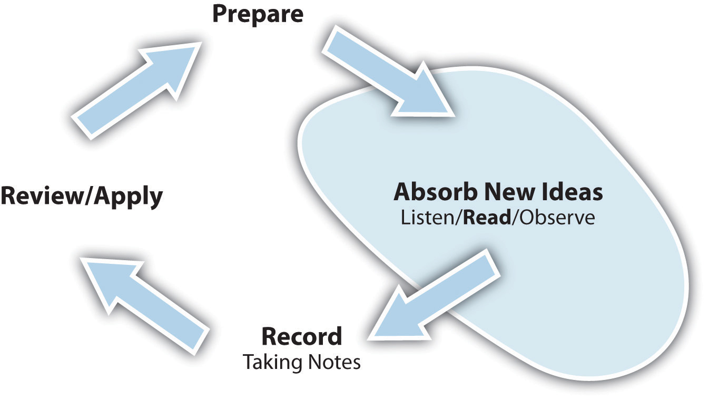

Assess your present knowledge and attitudes.
| Unsure | No | Yes | |
|---|---|---|---|
| 1. I am a good reader and like to read for pleasure. | |||
| 2. I feel overwhelmed by the amount of reading I have to do for classes. | |||
| 3. I usually understand what is written in textbooks. | |||
| 4. I get frustrated by difficult books. | |||
| 5. I find it easy to stay focused on my reading. | |||
| 6. I am easily bored reading for classes. | |||
| 7. I take useful notes when I read. | |||
| 8. I can successfully study for a test from the notes I have taken. | |||
| 9. I use a dictionary when needed while reading. | |||
| 10. I have trouble reading long passages on the computer screen. |
Think about how you answered the questions above. Be honest with yourself. On a scale of 1 to 10, how would you rate your level of academic reading at this time?
| Poor reader | Excellent reader | |||||||||||||||||
|---|---|---|---|---|---|---|---|---|---|---|---|---|---|---|---|---|---|---|
| 1 | 2 | 3 | 4 | 5 | 6 | 7 | 8 | 9 | 10 | |||||||||
In the following list, circle the three most important areas in which you think you can improve:
Are there other ways in which you can improve your reading? Write down other things you feel you need to work on.
__________________________________________________________________
__________________________________________________________________
__________________________________________________________________
__________________________________________________________________
Here’s what we’ll work on in this chapter:
Sure you can read. After all, that’s what you are doing now, at this moment. But reading to learn is active reading, a process that involves much more than the mechanics of converting a set of letters into meaningful words. It is a process that you will use for gathering much of the new information you get in school—and in life.
Does the following sound familiar? You’ve had a full day of classes, so you go to the gym to get in a workout. Afterward, you meet a friend who suggests going out for a quick bite; you get back to your room around eight o’clock and settle in to work on your reading assignment, a chapter from your sociology text entitled “Stratification and Social Mobility.” You jump right in to the first paragraph, but the second paragraph seems a bit tougher. Suddenly you wake up and shake your head and see your clock says 11:15 p.m. Oh no! Three hours down the drain napping, and your book is still staring back at you at the beginning of the chapter, and you have a crick in your neck.
Now, picture this: You schedule yourself for a series of shorter reading periods at the library between classes and during the afternoon. You spend a few minutes preparing for what you are going to read, and you get to work with pen and paper in hand. After your scheduled reading periods, by 5:30 p.m. you have completed the assignment, making a note that you are interested in comparing the social mobility in India with that in the United States. You reward yourself with a workout and dinner with a friend. At 8 p.m., you return to your room and review your notes, feeling confident that you are ready for the next class.
The difference between these two scenarios is active readingA conscious process in which the reader chooses to create an interaction with the written word, with the objective of increasing understanding.. Active reading is a planned, deliberate set of strategies to engage with text-based materials with the purpose of increasing your understanding. This is a key skill you need to master for college. Along with listening, it is the primary method for absorbing new ideas and information in college. But active reading also applies to and facilitates the other steps of the learning cycle; it is critical for preparing, capturing, and reviewing, too.
Figure 5.2 The Role of Reading in the Learning Cycle
In this chapter, you will learn the basics of active reading. Follow all the recommended steps, even though at first you may think they take too long. In the end, you will be able to cut your reading time while increasing what you learn from reading. Read on!
Think back to a high school history or literature class. Those were probably the classes in which you had the most reading. You would be assigned a chapter, or a few pages in a chapter, with the expectation that you would be discussing the reading assignment in class. In class, the teacher would guide you and your classmates through a review of your reading and ask questions to keep the discussion moving. The teacher usually was a key part of how you learned from your reading.
If you have been away from school for some time, it’s likely that your reading has been fairly casual. While time spent with a magazine or newspaper can be important, it’s not the sort of concentrated reading you will do in college. And no one will ask you to write in response to a magazine piece you’ve read or quiz you about a newspaper article.
In college, reading is much different. You will be expected to read much more. For each hour you spend in the classroom, you will be expected to spend two or more additional hours studying between classes, and most of that will be reading. Assignments will be longer (a couple of chapters is common, compared with perhaps only a few pages in high school) and much more difficult. College textbook authors write using many technical terms and include complex ideas. Many college authors include research, and some textbooks are written in a style you may find very dry. You will also have to read from a variety of sources: your textbook, ancillary materialsAdditional or supplemental reading materials beyond a standard course textbook. These may include journal articles and academic papers., primary sourcesDocuments, letters, diaries, newspaper reports, financial reports, lab reports, and records that directly report or offer new information or ideas, rather than secondary sources (like many textbooks) that collect information that originated in primary sources., academic journals, periodicals, and online postings. Your assignments in literature courses will be complete books, possibly with convoluted plots and unusual wording or dialects, and they may have so many characters you’ll feel like you need a scorecard to keep them straight.
In college, most instructors do not spend much time reviewing the reading assignment in class. Rather, they expect that you have done the assignment before coming to class and understand the material. The class lecture or discussion is often based on that expectation. Tests, too, are based on that expectation. This is why active reading is so important—it’s up to you to do the reading and comprehend what you read.
Note: It may not always be clear on an instructor’s syllabus, but a reading assignment listed on any given class date should be read before coming to class on that date.
The four steps of active reading are almost identical to the four phases of the learning cycle—and that is no coincidence! Active reading is learning through reading the written word, so the learning cycle naturally applies. Active reading involves these steps:
Let’s take a look at how to use each step when reading.
Start by thinking about why your instructor has chosen this text. Has the instructor said anything about the book or the author? Look at the table of contents; how does it compare with the course syllabus? What can you learn about the author from the front matterA publishing term used to describe the first parts of the book that are not part of the actual text. The front matter may include a preface, a foreword, an introduction, biographical profiles of the authors, and the table of contents. of the book (see Table 5.1 "Anatomy of a Textbook")? Understanding this background will give you the context of the book and help define what is most important in the text. Doing this exercise once per textbook will give you a great deal of insight throughout the course.
Now it is time to develop a plan of attack for your assignment. Your first step in any reading assignment is to understand the context of what you are about to read. Think of your reading assignment in relation to the large themes or goals the instructor has spelled out for the class. Remember that you are not merely reading—you are reading for a purpose. What parts of a reading assignment should you pay special attention to, and what parts can you browse through? As we mentioned in the beginning of this chapter, you will be expected to do a considerable amount of reading in college, and you will not get through it all by reading each and every word with a high level of focus and mental intensity. This is why it is so important to learn to define where to invest your efforts.
Open your text to the assigned pages. What is the chapter title? Is the chapter divided into sections? What are the section titles? Which sections are longer? Are there any illustrations? What are they about? Illustrations in books cost money, so chances are the author and publisher thought these topics were particularly important, or they would not have been included. How about tables? What kinds of information do they show? Are there bold or italicized words? Are these terms you are familiar with, or are they new to you? Are you getting a sense for what is important in the chapter? Use the critical thinking skills discussed in Chapter 3 "Thinking about Thought" as you think about your observations. Why did the author choose to cover certain ideas and to highlight specific ideas with graphics or boldface fonts? What do they tell you about what will be most important for you in your course? What do you think your instructor wants you to get out of the assignment? Why?
Good textbooks are designed to help you learn, not just to present information. They differ from other types of academic publications intended to present research findings, advance new ideas, or deeply examine a specific subject. Textbooks have many features worth exploring because they can help you understand your reading better and learn more effectively. In your textbooks, look for the elements listed in the table below.
Table 5.1 Anatomy of a Textbook
| Textbook Feature | What It Is | Why You Might Find It Helpful |
|---|---|---|
|
Preface or Introduction |
A section at the beginning of a book in which the author or editor outlines its purpose and scope, acknowledges individuals who helped prepare the book, and perhaps outlines the features of the book. | You will gain perspective on the author’s point of view, what the author considers important. If the preface is written with the student in mind, it will also give you guidance on how to “use” the textbook and its features. |
| Foreword | A section at the beginning of the book, often written by an expert in the subject matter (different from the author) endorsing the author’s work and explaining why the work is significant. | A foreword will give you an idea about what makes this book different from others in the field. It may provide hints as to why your instructor selected the book for your course. |
| Author Profile | A short biography of the author illustrating the author’s credibility in the subject matter. | This will help you understand the author’s perspective and what the author considers important. |
|
Table of Contents |
A listing of all the chapters in the book and, in most cases, primary sections within chapters. | The table of contents is an outline of the entire book. It will be very helpful in establishing links among the text, the course objectives, and the syllabus. |
|
Chapter Preview or Learning Objectives |
A section at the beginning of each chapter in which the author outlines what will be covered in the chapter and what the student should expect to know or be able to do at the end of the chapter. | These sections are invaluable for determining what you should pay special attention to. Be sure to compare these outcomes with the objectives stated in the course syllabus. |
| Introduction | The first paragraph(s) of a chapter, which states the chapter’s objectives and key themes. An introduction is also common at the beginning of primary chapter sections. | Introductions to chapters or sections are “must reads” because they give you a road map to the material you are about to read, pointing you to what is truly important in the chapter or section. |
| Applied Practice Elements | Exercises, activities, or drills designed to let students apply their knowledge gained from the reading. Some of these features may be presented via Web sites designed to supplement the text. | These features provide you with a great way to confirm your understanding of the material. If you have trouble with them, you should go back and reread the section. They also have the additional benefit of improving your recall of the material. |
| Chapter Summary | A section at the end of a chapter that confirms key ideas presented in the chapter. | It is a good idea to read this section before you read the body of the chapter. It will help you strategize about where you should invest your reading effort. |
| Review Material | A section at the end of the chapter that includes additional applied practice exercises, review questions, and suggestions for further reading. | The review questions will help you confirm your understanding of the material. |
| Endnotes and Bibliographies | Formal citations of sources used to prepare the text. | These will help you infer the author’s biases and are also valuable if doing further research on the subject for a paper. |
Now, before actually starting to read, try to give your reading more direction. Are you ever bored when reading a textbook? Students sometimes feel that about some of their textbooks. In this step, you create a purpose or quest for your reading, and this will help you become more actively engaged and less bored.
Start by checking your attitude: if you are unhappy about the reading assignment and complaining that you even have to read it, you will have trouble with the reading. You need to get “psyched” for the assignment. Stoke your determination by setting yourself a reasonable time to complete the assignment and schedule some short breaks for yourself. Approach the reading with a sense of curiosity and thirst for new understanding. Think of yourself more as an investigator looking for answers than a student doing a homework assignment.
Take out your notebook for the class for which you are doing the reading. Remember the Cornell method of note taking from Chapter 4 "Listening, Taking Notes, and Remembering"? You will use the same format here with a narrow column on the left and a wide column on the right. This time, with reading, approach taking notes slightly differently. In the Cornell method used for class notes, you took notes in the right column and wrote in questions and comments in the left column after class as you reviewed your notes. When using this system with reading, write your questions about the reading first in the left column (spacing them well apart so that you have plenty of room for your notes while you read in the right column). From your preliminary scanning of the pages, as described previously, you should already have questions at your fingertips.
Use your critical thinking skill of questioning what the author is saying. Turn the title of each major section of the reading into a question and write it down in your left column of your notes. For example, if the section title is “The End of the Industrial Revolution,” you might write, “What caused the Industrial Revolution to end?” If the section title is “The Chemistry of Photosynthesis,” you might write, “What chemical reactions take place to cause photosynthesis, and what are the outcomes?” Note that your questions are related to the kind of material you are hearing about in class, and they usually require not a short answer but a thoughtful, complete understanding. Ideally, you should not already know the answer to the questions you are writing! (What fun is a quest if you already know each turn and strategy? Expect to learn something new in your reading even if you are familiar with the topic already.) Finally, also in the left column, jot down any keywords that appear in boldface. You will want to discover their definitions and the significance of each as you read.
OK. Time to take a break from reading this book. Choose a textbook in which you have a current reading assignment. Scan the assigned pages, looking for what is really important, and write down your questions using the Cornell method.
Now answer the following questions with a journal entry.
________________________________________________________________________________
________________________________________________________________________________
________________________________________________________________________________
________________________________________________________________________________
________________________________________________________________________________
________________________________________________________________________________
________________________________________________________________________________
________________________________________________________________________________
In Chapter 4 "Listening, Taking Notes, and Remembering" you may have determined that you are more comfortable with the outline or concept map methods of note taking. You can use either of these methods also to prepare for reading. With the outline method, start with the chapter title as your primary heading, then create subheadings for each section, rephrasing each section title in terms of a question.
If you are more comfortable using the concept map method, start with the chapter title as your center and create branches for each section within the chapter. Make sure you phrase each item as a question.
Now you are ready to start reading actively. Start by taking a look at your notes; they are your road map. What is the question you would like to answer in the first section? Before you start reading, reflect about what you already know about the subject. Even if you don’t know anything, this step helps put you in the right mind-set to accept new material. Now read through the entire section with the objective of understanding it. Follow these tips while reading, but do not start taking notes or highlighting text at this point:
After reading the section, can you answer the section question you earlier wrote in your notes? Did you discover additional questions that you should have asked or that were not evident from the title of the section? Write them down now on your notes page. Can you define the keywords used in the text? If you can’t do either of these things, go back and reread the section.
Once you can answer your questions effectively and can define the new and keywords, it is time to commit these concepts to your notes and to your memory. Start by writing the answers to your questions in your notes in the right column. Also define the keywords you found in the reading.
Now is also the time to go back and reread the section with your highlighter or pencil to call out key ideas and words and make notes in your margins. Marking up your book may go against what you were told in high school, when the school owned the books and expected to use them year after year. In college, you bought the book. Make it truly yours. Although some students may tell you that you can get more cash by selling a used book that is not marked up, this should not be a concern at this time—that’s not nearly as important as understanding the reading and doing well in the class!
The purpose of marking your textbook is to make it your personal studying assistant with the key ideas called out in the text. Most readers tend to highlight too much, however, hiding key ideas in a sea of yellow lines. When it comes to highlighting, less is more. Think critically before you highlight. Your choices will have a big impact on what you study and learn for the course. Make it your objective to highlight no more than 10 percent of the text.
Use your pencil also to make annotations in the margin. Use a symbol like an exclamation mark (!) or an asterisk (*) to mark an idea that is particularly important. Use a question mark (?) to indicate something you don’t understand or are unclear about. Box new words, then write a short definition in the margin. Use “TQ” (for “test question”) or some other shorthand or symbol to signal key things that may appear in test or quiz questions. Write personal notes on items where you disagree with the author. Don’t feel you have to use the symbols listed here; create your own if you want, but be consistent. Your notes won’t help you if the first question you later have is “I wonder what I meant by that?”
If you are reading an essay from a magazine or an academic journal, remember that such articles are typically written in response to other articles. In Chapter 4 "Listening, Taking Notes, and Remembering", you learned to be on the lookout for signal words when you listen. This applies to reading, too. You’ll need to be especially alert to signals like “according to” or “Jones argues,” which make it clear that the ideas don’t belong to the author of the piece you are reading. Be sure to note when an author is quoting someone else or summarizing another person’s position. Sometimes, students in a hurry to get through a complicated article don’t clearly distinguish the author’s ideas from the ideas the author argues against. Other words like “yet” or “however” indicate a turn from one idea to another. Words like “critical,” “significant,” and “important” signal ideas you should look at closely.
After annotating, you are ready to read the next section.
When you have completed each of the sections for your assignment, you should review what you have read. Start by answering these questions: “What did I learn?” and “What does it mean?” Next, write a summary of your assigned reading, in your own words, in the box at the base of your notepaper. Working from your notes, cover up the answers to your questions and answer each of your questions aloud. (Yes, out loud. Remember from Chapter 4 "Listening, Taking Notes, and Remembering" that memory is improved by using as many senses as possible?) Think about how each idea relates to material the instructor is covering in class. Think about how this new knowledge may be applied in your next class.
If the text has review questions at the end of the chapter, answer those, too. Talk to other students about the reading assignment. Merge your reading notes with your class notes and review both together. How does your reading increase your understanding of what you have covered in class and vice versa?
The four steps to active reading provide a proven approach to effective learning from texts. Following are some strategies you can use to enhance your reading even further:
List the four steps to active reading. Which one do you think will take most time? Why?
__________________________________________________________________
__________________________________________________________________
__________________________________________________________________
__________________________________________________________________
Think of your most difficult textbook. What features can you use to help you understand the material better?
__________________________________________________________________
__________________________________________________________________
What things most commonly distract you when you are reading? What can you do to control these distractions?
__________________________________________________________________
__________________________________________________________________
List three specific places on your campus or at home that are appropriate for you to do your reading assignments. Which is best suited? What can you do to improve that reading environment?
__________________________________________________________________
__________________________________________________________________
__________________________________________________________________
Recognize strategies for reading special types of material and special situations, such as the following:
While the active reading process outlined earlier is very useful for most assignments, you should consider some additional strategies for reading assignments in other subjects.
Mathematics present unique challenges in that they typically contain a great number of formulas, charts, sample problems, and exercises. Follow these guidelines:
You read earlier about noticing graphics in your text as a signal of important ideas. But it is equally important to understand what the graphics intend to convey. Textbooks contain tables, charts, maps, diagrams, illustrations, photographs, and the newest form of graphics—Internet URLs for accessing text and media material. Many students are tempted to skip over graphic material and focus only on the reading. Don’t. Take the time to read and understand your textbook’s graphics. They will increase your understanding, and because they engage different comprehension processes, they will create different kinds of memory links to help you remember the material.
To get the most out of graphic material, use your critical thinking skills and question why each illustration is present and what it means. Don’t just glance at the graphics; take time to read the title, caption, and any labeling in the illustration. In a chart, read the data labels to understand what is being shown or compared. Think about projecting the data points beyond the scope of the chart; what would happen next? Why?
Table 5.2 "Common Uses of Textbook Graphics" shows the most common graphic elements and notes what they do best. This knowledge may help guide your critical analysis of graphic elements.
Table 5.2 Common Uses of Textbook Graphics
|
Figure 5.3 Table |
Most often used to present raw data. Understand what is being measured. What data points stand out as very high or low? Why? Ask yourself what might cause these measurements to change. |
|
Figure 5.4 Bar Chart |
Used to compare quantitative data or show changes in data over time. Also can be used to compare a limited number of data series over time. Often an illustration of data that can also be presented in a table. |
|
Figure 5.5 Line Chart |
Used to illustrate a trend in a series of data. May be used to compare different series over time. |
|
Figure 5.6 Pie Chart |
Used to illustrate the distribution or share of elements as a part of a whole. Ask yourself what effect a change in distribution of factors would have on the whole. |
|
Figure 5.7 Map 
|
Used to illustrate geographic distributions or movement across geographical space. In some cases can be used to show concentrations of populations or resources. When encountering a map, ask yourself if changes or comparisons are being illustrated. Understand how those changes or comparisons relate to the material in the text. |
|
Figure 5.8 Photograph 
|
Used to represent a person, a condition, or an idea discussed in the text. Sometimes photographs serve mainly to emphasize an important person or situation, but photographs can also be used to make a point. Ask yourself if the photograph reveals a biased point of view. |
|
Figure 5.9 Illustration 
|
Used to illustrate parts of an item. Invest time in these graphics. They are often used as parts of quizzes or exams. Look carefully at the labels. These are vocabulary words you should be able to define. |
|
Figure 5.10 Flowchart or Diagram 
|
Commonly used to illustrate processes. As you look at diagrams, ask yourself, “What happens first? What needs to happen to move to the next step?” |
Science occurs through the experimental process: posing hypotheses, and then using experimental data to prove or disprove them. When reading scientific texts, look for hypotheses and list them in the left column of your notes pages. Then make notes on the proof (or disproof) in the right column. In scientific studies these are as important as the questions you ask for other texts. Think critically about the hypotheses and the experiments used to prove or disprove them. Think about questions like these:
Social sciences texts, such as those for history, economics, and political science classes, often involve interpretation where the authors’ points of view and theories are as important as the facts they present. Put your critical thinking skills into overdrive when you are reading these texts. As you read, ask yourself questions such as the following:
Record your reflections in the margins and in your notes.
Social science courses often require you to read primary source documents. Primary sources include documents, letters, diaries, newspaper reports, financial reports, lab reports, and records that provide firsthand accounts of the events, practices, or conditions you are studying. Start by understanding the author(s) of the document and his or her agenda. Infer their intended audience. What response did the authors hope to get from their audience? Do you consider this a biasA personal inclination that may prevent unprejudiced consideration of a question.? How does that bias affect your thinking about the subject? Do you recognize personal biases that affect how you might interpret the document?
Reading texts in a foreign language is particularly challenging—but it also provides you with invaluable practice and many new vocabulary words in your “new” language. It is an effort that really pays off. Start by analyzing a short portion of the text (a sentence or two) to see what you do know. Remember that all languages are built on idiomsAn expression whose meaning is not predictable by the meanings of the words that make it up; many slang expressions are idioms. as much as on individual words. Do any of the phrase structures look familiar? Can you infer the meaning of the sentences? Do they make sense based on the context? If you still can’t make out the meaning, choose one or two words to look up in your dictionary and try again. Look for longer words, which generally are the nouns and verbs that will give you meaning sooner. Don’t rely on a dictionary (or an online translator); a word-for-word translation does not always yield good results. For example, the Spanish phrase “Entre y tome asiento” might correctly be translated (word for word) as “Between and drink a seat,” which means nothing, rather than its actual meaning, “Come in and take a seat.”
Reading in a foreign language is hard and tiring work. Make sure you schedule significantly more time than you would normally allocate for reading in your own language and reward yourself with more frequent breaks. But don’t shy away from doing this work; the best way to learn a new language is practice, practice, practice.
Note to English-language learners: You may feel that every book you are assigned is in a foreign language. If you do struggle with the high reading level required of college students, check for college resources that may be available to ESL (English as a second language) learners. Never feel that those resources are only for weak students. As a second-language learner, you possess a rich linguistic experience that many American-born students should envy. You simply need to account for the difficulties you’ll face and (like anyone learning a new language) practice, practice, practice.
Go online and open a Web-based language translator such as Babel Fish (http://www.babelfish.yahoo.com). In the translation window, type in a phrase that you or your friends might say in your daily conversations, including any slang terms. Translate it to another language (any language will do) and then copy the translation. Then open a new translation window, paste the translated phrase, and translate back from that language to English. Does it match your original phrase? Try this with other languages to see if your results vary. What does this tell you about automated translation programs?
If you are a parent of young children, you know how hard it is to get your schoolwork done with them around. You might want to consider some of these strategies.
When accessing materials online, you should ask additional questions in order to fully understand the assignment. The Internet provides access to virtually endless numbers of articles on just about any subject. The following five steps will help you understand the “story behind the story” in online materials and also evaluate the reliability of the material, especially if this is a reading you selected yourself for research or independent work.
University of California Berkeley Library. http://www.lib.berkeley.edu/TeachingLib/Guides/Internet/Evaluate.html
Cornell University Olin and Uris Libraries. http://www.library.cornell.edu/olinuris/ref/webcrit.html
Duke University Library. http://library.duke.edu/services/instruction/libraryguide/evalwebpages.html
Go online and find an article about something you are reading about in a textbook. (Use the five steps to evaluate the article.) Scan both the Web page and the equivalent textbook section and list your questions for both. Are the questions different, or are many similar? How does each author answer those questions? Which do you think is better written and more authoritative? Why?
Both leaders and advertisers inspire people to take action by choosing their words carefully and using them precisely. A good vocabulary is essential for success in any role that involves communication, and just about every role in life requires good communication skills. We include this section on vocabulary in this chapter on reading because of the connections between vocabulary building and reading. Building your vocabulary will make your reading easier, and reading is the best way to build your vocabulary.
Learning new words can be fun and does not need to involve tedious rote memorization of word lists. The first step, as in any other aspect of the learning cycle, is to prepare yourself to learn. Consciously decide that you want to improve your vocabulary; decide you want to be a student of words. Work to become more aware of the words around you: the words you hear, the words you read, the words you say, and those you write.
Do you have a lazy vocabulary? Wake it up with the “lazy speech” exercise.
Recruit a friend you spend a lot of time with. Give them an index card with the following words written on it and ask them to keep a tally of the number of times you say these words sometime when you are together for an hour or more. If you have a small recorder, give it to the person and ask them to record you at a time you are not aware of it.
Include in this list any other words, including expletives, that you may be using without thinking.
Are there words you constantly overuse? Were you surprised at how often you used some of these expressions? Now that you are aware of the frequency you use certain expressions, what strategies can you use to control or substitute more articulate and expressive words for them?
Building a stronger vocabulary should start with a strong foundation of healthy word use. Just as you can bring your overuse of certain words to your conscious awareness in the previous activity, think about the kinds of words you should be using more frequently. Some of the words you might consciously practice are actually very simple ones you already know but significantly underuse or use imprecisely. For example, many students say he or she “goes” instead of he or she “says.” If you take it a step further, you can consider more accurate choices still. Perhaps, he “claims” or she “argues.” Maybe he “insists” or “assumes.” Or it could be that she “believes” or she “suggests.” This may seem like a small matter, but it’s important from both a reader’s and a writer’s perspective to distinguish among the different meanings. And you can develop greater awareness by bringing some of these words into your speech.
These habits are easier to put into action if you have more and better material to draw upon: a stronger vocabulary. The following tips will help you gain and correctly use more words.
Table 5.3 Common Latin and Greek Word Roots
| Root | Meaning | Examples |
|---|---|---|
| auto | self | automatic, automobile |
| bi | two | bicycle, biplane |
| bio | life | biography, biology |
| chrono | time | synchronize, chronicle |
| dict | say | predict, dictate |
| gen | give birth | generate, genetic |
| geo | earth | geology, geography, geometry |
| log | thought | biology, logic, pathology |
| manu | hand | manufacture, manual |
| phil | love | philosophy, anglophile |
| port | carry | transport, portable |
| sub | under | submarine, subtract |
| vac | empty | vacuum, evacuate |
The following are some fun ways to find new words:
Which words do you habitually overuse? Do your friends overuse the same words? How can you collaborate to correct that overuse?
__________________________________________________________________
__________________________________________________________________
__________________________________________________________________
During the course of the day, find five new words in five different places. What were those words, and where did you uncover them?
__________________________________________________________________
__________________________________________________________________
__________________________________________________________________
__________________________________________________________________
__________________________________________________________________
What do the words “manuscript,” “scribe,” and “scribble” have in common? Can you detect the same root in these words?
__________________________________________________________________
What do you think the root means?
__________________________________________________________________
Reading
Active reading involves four steps:
Special Texts and Situations
Vocabulary
When you encounter a new word, follow these steps:
Describe the four steps of active reading.
__________________________________________________________________
__________________________________________________________________
__________________________________________________________________
__________________________________________________________________
What part of a textbook should you compare with a class syllabus? Why?
__________________________________________________________________
__________________________________________________________________
Why is it important to know something about a textbook’s author?
__________________________________________________________________
__________________________________________________________________
What time of the day should you plan to do your reading? Why?
__________________________________________________________________
__________________________________________________________________
What is the difference between using the Cornell method for taking class notes and using the Cornell method for reading notes?
__________________________________________________________________
__________________________________________________________________
Why do you think it is important to pose some questions about the material before you read?
__________________________________________________________________
__________________________________________________________________
What should you do if you are getting tired when reading?
__________________________________________________________________
__________________________________________________________________
List three requirements for a good reading location.
__________________________________________________________________
__________________________________________________________________
__________________________________________________________________
Can you multitask while doing a reading assignment? Why or why not?
__________________________________________________________________
__________________________________________________________________
__________________________________________________________________
Describe the process of evaluating a Web-based reading selection.
__________________________________________________________________
__________________________________________________________________
__________________________________________________________________
| Two things I will do to improve | Actions | By when I expect to take the action | How I will know I accomplished the action |
|---|---|---|---|
| My reading comprehension/understanding | 1. | ||
| 2. | |||
| My reading speed | 1. | ||
| 2. | |||
| My vocabulary | 1. | ||
| 2. |